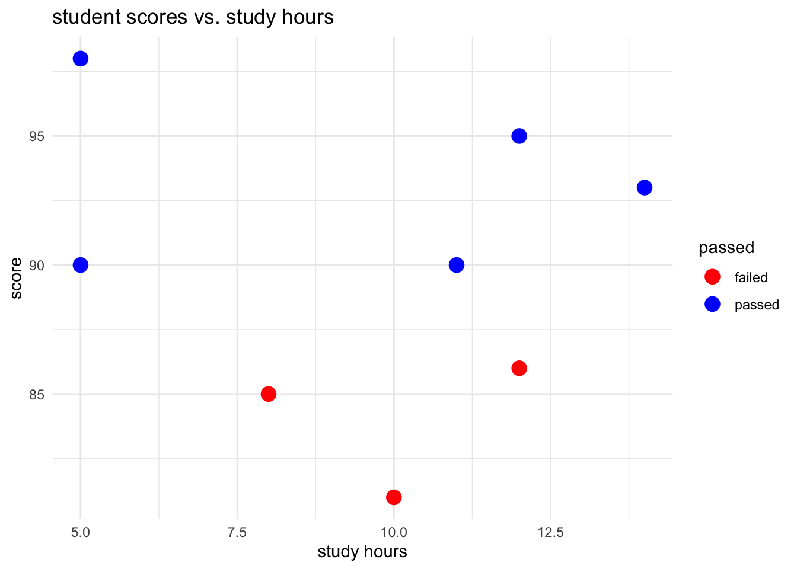

![]()

Background readings: none today!
- If you want to get started, download R and Rstudio as below
- List of recommended readings at the end of this lecture.
Key concepts for the test(s):
Today we introduce the following topics relevant to the Test(s)
- Confounding (introduced in week 2)
- Internal Validity (introduced in week 2)
- External Validity (introduced in week 3)
Today we discuss these concepts informally. We will define these concepts formally in technical detail in week 2.
Lecture: Introduction to the Course
Slides
Open in browser here
Lab 1: Installing R and RStudio
Why learn R?
This session introduces R and R-Studio.
- Essential for your final report.
- Supports your psychology coursework.
- Enhances your coding skills, crucial for navigating AI advancements.
- Coding can become as enjoyable as music or languages over time.
Installing R
- Visit the Comprehensive R Archive Network (CRAN) at https://cran.r-project.org/.
- Select the version of R suitable for your operating system (Windows, Mac, or Linux).
- Download and install it by following the on-screen instructions.
Installing RStudio
After Downloading R…
Step 1: Installing R-Studio
Assume you have downloaded and installed R from the Comprehensive R Archive Network (CRAN).
- Go to the RStudio download page at https://www.rstudio.com/products/rstudio/download/.
- Choose the free version of RStudio Desktop, and download it for your operating system.
- Download and install RStudio Desktop.
- Open RStudio to begin setting up your project environment.
Step 2: Create a new project
- In RStudio, go to
File > New Project. - Choose
New Directoryfor a new project orExisting Directoryif you have a folder where you want to initialise an RStudio project. - For a new project, select
New Project, then provide a directory name. This name will also be the name of your project. - Specify the location where the project folder will be created.
- Click
Create Project.
Step 3: Give project structure
- Organising Files and Folders:
- Within your project, create folders to organise your scripts and data. Common folder names include
R/for R scripts,data/for datasets, anddoc/for documentation. - You can create these folders using RStudio’s
Filespane or through your operating system’s file explorer.
- Within your project, create folders to organise your scripts and data. Common folder names include
- Creating and Managing R Scripts:
- To create a new R script, go to
File > New File > R Script. - Save the script in your project directory’s
R/folder to keep your work organised. Use meaningful file names that describe the script’s purpose.
- To create a new R script, go to
- Version Control:
- If you are familiar with version control, you can initialise a Git repository within your project by selecting the
Version Controloption when creating a new project. - This allows for better tracking of changes and collaboration if working with others.
- If you are not familiar with version control (or have not installed
giton your machine), do not worry about initialising a Git repository
- If you are familiar with version control, you can initialise a Git repository within your project by selecting the
Step 4: Working with R-scripts
- Writing and Executing Code:
- Write your R code in the script editor.
- Execute code by selecting lines and pressing
Ctrl + Enter(Windows/Linux) orCmd + Enter(Mac).
- Commenting and Documentation:
- Use comments (preceded by
#) to document your code for clarity and future reference.
- Use comments (preceded by
- Saving and Organising Scripts:
- Regularly save your scripts (
Ctrl + SorCmd + S). - Organise scripts into folders within your project for different analyses or data processing tasks.
- Regularly save your scripts (
Step 5: Exit R-studio
- Before concluding your work, save your workspace or clear it to start fresh in the next session (
Session > Restart R).
::: {.callout-note title=“Exercise 1”, icon=false}
Order your R-studio/R workflow
- Clear folder structure
- Clearly defined script names
- Annotate your code
::: {.callout-note title=“Exercise 1”, icon=false} ### Exercise 1: Install the tidyverse package
Follow these instructions to install the tidyverse package in RStudio:
Open RStudio: Launch the RStudio application on your computer.
Access Package Installation:
- Navigate to the menu at the top of RStudio and click on
Tools > Install Packages.... This opens the Install Packages dialogue box.
- Navigate to the menu at the top of RStudio and click on
Install
tidyverse:- In the Install Packages dialogue box, you will see a field labelled “Packages (separate multiple with space or comma):”. Click in this field and type
tidyverse. - Below the packages field, ensure the checkbox for
Install dependenciesis checked. This ensures all packages thattidyversedepends on are also installed. - Click the
Installbutton to begin the installation process.
- In the Install Packages dialogue box, you will see a field labelled “Packages (separate multiple with space or comma):”. Click in this field and type
Begin installation:
- Click on the “Install” button to start the installation process.
Wait for completion: The installation might take a few minutes. Monitor the progress in the “Console” pane. Once the installation is complete, you will see a message in the console indicating that the process has finished.
Loading
tidyverse: After successful installation, you can load thetidyversepackage into your R session by typinglibrary(tidyverse)in the console and pressingEnter. :::
Basic R Commands
Note
Copy R-code from the code blocks by hovering your cursor over the top right of the code panel.
Assignment (<-)
Assignment in R is done using the <- operator. It assigns values to variables.
x <- 10 # assigns the value 10 to x
y <- 5 # assigns the value 5 to y
# this does the same
x = 10
y = 5
# note what happens when we do this
# 10 = 5 # not run
# but we can do this
# 10 == 5 # considered belowConcatenation (c())
The c() function combines multiple elements into a vector.
numbers <- c(1, 2, 3, 4, 5) # a vector of numbers
print(numbers)[1] 1 2 3 4 5Operations (+, -)
Basic arithmetic operations include addition (+) and subtraction (-).
sum <- x + y # adds x and y
print(sum)[1] 15difference <- x - y # subtracts y from x
# note we did not need to use the `print()` function
difference[1] 5In addition to assignment, multiplication and division are fundamental arithmetic operations in R that allow you to manipulate numeric data. Here is how you can incorporate these operations into your basic R commands documentation:
Multiplication (*) and Division (/)
Multiplication and division in R are performed using the * and / operators, respectively. These operators allow for element-wise operations on vectors, as well as operations on individual numeric values.
# multiplication
product <- x * y # multiplies x by y
product[1] 50# division
quotient <- x / y # divides x by y
quotient[1] 2# element-wise multiplication on vectors
vector1 <- c(1, 2, 3)
vector2 <- c(4, 5, 6)
vector_product <- vector1 * vector2 # multiplies each element of vector1 by the corresponding element of vector2
vector_product[1] 4 10 18# element-wise division on vectors
vector_division <- vector1 / vector2 # divides each element of vector1 by the corresponding element of vector2
vector_division[1] 0.25 0.40 0.50- Multiplication and division can be used for scalar (single values) and vector (multiple values) operations. When applied to vectors, these operations are performed element-wise.
- Be mindful of division by zero, as this will result in
Inf(infinity) orNaN(not a number) depending on the context.
# example of division by zero
result <- 10 / 0 # results in Inf
zero_division <- 0 / 0 # results in NaN- R also supports integer division using the
%/%operator and modulo operation using%%to find the remainder.
# integer division
integer_division <- 10 %/% 3 # results in 3
# modulo operation
remainder <- 10 %% 3 # results in 1Logic (!, !=, ==)
Logical operations include NOT (!), NOT EQUAL (!=), and EQUAL (==).
x_not_y <- x != y # checks if x is not equal to y
x_not_y[1] TRUEx_equal_10 <- x == 10 # checks if x is equal to 10
x_equal_10[1] TRUELogical operations are fundamental in R for controlling the flow of execution and making decisions based on conditions. In addition to NOT (!), NOT EQUAL (!=), and EQUAL (==), there are several other logical operators you should know:
OR (| and ||)
- The
|operator performs element-wise logical OR operation. It evaluates each pair of elements in two logical vectors to see if at least one isTRUE. - The
||operator performs a logical OR operation but only evaluates the first element of each vector. It’s mainly used in if statements and not for vectorised operations.
# element-wise OR
vector_or <- c(TRUE, FALSE) | c(FALSE, TRUE) # returns c(TRUE, TRUE)
# single OR (only looks at first element)
single_or <- TRUE || FALSE # returns TRUEAND (& and &&)
- The
&operator performs element-wise logical AND operations. It checks if both elements in the corresponding positions of two logical vectors areTRUE. - The
&&operator performs a logical AND operation but only evaluates the first element of each vector. Like||, it’s used in conditions that do not require vectorised operations.
# element-wise AND
vector_and <- c(TRUE, FALSE) & c(FALSE, TRUE) # returns c(FALSE, FALSE)
# single AND (only looks at first element)
single_and <- TRUE && FALSE # returns FALSEWorking with Strings
Strings are sequences of characters.
name <- "world" # assigns a string to name
greeting <- paste("Hello,", name) # Concatenates strings
#print
greeting[1] "Hello, world"Factors
Factors are used to represent categorical data.
gender <- factor(c("Male", "Female", "Female", "Male"))
head(gender)[1] Male Female Female Male
Levels: Female MaleOrdered Factors
To create an ordered factor, you use the factor() function with the ordered argument set to TRUE, or you can directly use the ordered() function. You can also specify the levels in their natural order using the levels argument if the default order does not match the natural sequence.
# using factor() function with ordered = TRUE
education_levels <- c("High School", "Bachelor", "Master", "Ph.D.")
education_factor <- factor(education_levels, ordered = TRUE)
# alternatively, using ordered() function
education_ordered <- ordered(education_levels)
# specifying levels explicitly
education_ordered_explicit <- factor(education_levels, levels = c("High School", "Bachelor", "Master", "Ph.D."), ordered = TRUE)Operations with Ordered Factors
Ordered factors allow for comparison operations that make sense in their context, such as less than (<), greater than (>), etc., based on their order.
# Comparing educational levels
edu1 <- ordered("Bachelor", levels = c("High School", "Bachelor", "Master", "Ph.D."))
edu2 <- ordered("Master", levels = c("High School", "Bachelor", "Master", "Ph.D."))
# Check if edu2 is a higher degree than edu1
edu2 > edu1 # Returns TRUE[1] TRUEOrdered factors can be useful in statistical models where the order impacts the model, such as ordinal logistic regression. The order of the factor levels can influence the model’s interpretation and coefficients. We will return to ordered factors and ordered/logistic regression later in the course.
Checking Data with Ordered Factors
You can view the structure and summary of ordered factors just as with regular factors, but the output will indicate the order.
# viewing the structure
str(education_ordered) Ord.factor w/ 4 levels "Bachelor"<"High School"<..: 2 1 3 4# summary to see the distribution
summary(education_ordered) Bachelor High School Master Ph.D.
1 1 1 1 Modifying Ordered Factors
If you need to change the order of levels or add new levels, you can re-factor the variable using factor() or ordered() and specify the new levels.
# adding a new level and reordering
new_levels <- c("Primary School", "High School", "Bachelor", "Master", "Ph.D.")
education_updated <- factor(education_levels, levels = new_levels, ordered = TRUE)Working with Vectors
Vectors are one of R’s most fundamental data structures, essential for storing and manipulating a sequence of data elements. They are homogenous, meaning all elements in a vector must be of the same type (e.g., all numeric, all character, etc.). Here’s an overview of vectors in R, including how to create, access, and manipulate them.
Vectors in R can be created using the c() function, which stands for concatenate or combine:
# Numeric vector
numeric_vector <- c(1, 2, 3, 4, 5)
# Character vector
character_vector <- c("apple", "banana", "cherry")
# Logical vector
logical_vector <- c(TRUE, FALSE, TRUE, FALSE)Manipulating Vectors
You can modify vectors by adding new elements, changing existing elements, or removing elements:
# adding an element
numeric_vector <- c(numeric_vector, 6) # Adds 6 to the end of numeric_vector
numeric_vector[1] 1 2 3 4 5 6#print
numeric_vector[1] 1 2 3 4 5 6# changing an element
numeric_vector[1] <- 10 # Changes the first element to 10
#show
numeric_vector[1] 10 2 3 4 5 6You can access elements of a vector by using square brackets [ ] with an index or a vector of indices:
# the first element of numeric_vector
first_element <- numeric_vector[1]
#show
first_element[1] 10# multiple elements
some_elements <- numeric_vector[c(2, 4)] # Gets the 2nd and 4th elements
#show
first_element[1] 10Vector Operations
R allows you to perform operations on vectors in a very intuitive way. Operations are vectorised, meaning they are applied element-wise:
# arithmetic operations
vector_sum <- numeric_vector + 10 # Adds 10 to each element
#show
vector_sum[1] 20 12 13 14 15 16# vector mutliplication
vector_multiplication <- numeric_vector * 2 # Multiplies each element by 2
#show
vector_multiplication[1] 20 4 6 8 10 12# logical operations
vector_greater_than_three <- numeric_vector > 3 # Returns a logical vector
#show
vector_greater_than_three[1] TRUE FALSE FALSE TRUE TRUE TRUEFunctions with vectors
R provides a rich set of functions for statistical computations and manipulations that work with vectors:
# statistical summary
vector_mean <- mean(numeric_vector)
vector_mean[1] 5vector_sum <- sum(numeric_vector)
vector_sum[1] 30# sorting
sorted_vector <- sort(numeric_vector)
sorted_vector[1] 2 3 4 5 6 10# unique values
unique_vector <- unique(character_vector)
unique_vector[1] "apple" "banana" "cherry"Manipulating vectors
You can modify vectors by adding new elements, changing existing elements, or removing elements:
# adding an element
numeric_vector <-
c(numeric_vector, 6) # Adds 6 to the end of numeric_vector
numeric_vector[1] 10 2 3 4 5 6 6# changing an element
numeric_vector[1] <- 10 # Changes the first element to 10
#show new
numeric_vector[1] 10 2 3 4 5 6 6
RStudio Workflow Shortcuts
Boost your productivity in RStudio with these essential shortcuts:
- Execute Code Line:
Cmd+Return(Mac) orCtrl+Enter(Windows/Linux) - Insert Section Heading:
Cmd+Shift+R(Mac) orCtrl+Shift+R(Windows/Linux) - Align Code:
Cmd+Shift+A(Mac) orCtrl+Shift+A(Windows/Linux) - Comment/Uncomment:
Cmd/Ctrl+Shift+C - Save All:
Cmd/Ctrl+Shift+S - Find/Replace:
Cmd/Ctrl+F,Cmd/Ctrl+Shift+F - New File:
Cmd/Ctrl+Shift+N - Auto-complete:
Tab
For more commands, explore the Command Palette available under Tools -> Command Palette or Shift + Cmd + P (Mac) or Shift + Ctrl + P (Windows/Linux). These shortcuts facilitate efficient code execution, organisation, and formatting.
Working with Data Frames
Creating Data Frames
Data frames can be created using the data.frame() function, specifying each column and its values. Here’s a simple example:
df <- data.frame(
Name = c("Alice", "Bob", "Charlie"),
Age = c(25, 30, 35),
Gender = c("Female", "Male", "Male")
)
# check structure
head(df) Name Age Gender
1 Alice 25 Female
2 Bob 30 Male
3 Charlie 35 Malestr(df)'data.frame': 3 obs. of 3 variables:
$ Name : chr "Alice" "Bob" "Charlie"
$ Age : num 25 30 35
$ Gender: chr "Female" "Male" "Male"summary(df) Name Age Gender
Length:3 Min. :25.0 Length:3
Class :character 1st Qu.:27.5 Class :character
Mode :character Median :30.0 Mode :character
Mean :30.0
3rd Qu.:32.5
Max. :35.0 In this example, df is a data frame with three columns (Name, Age, Gender) and three rows, each representing a different individual.
Accessing Data Frame Elements
There are often several ways to do the same thing in R. You can access the elements of a data frame in several ways:
- By Column Name: Use the
$operator followed by the column name.
names <- df$Name # extracts the `Name` column- By Row and Column: Use the
[row, column]indexing. Rows or columns can be specified by number or name.
second_person <- df[2, ] # extracts the second row
age_column <- df[, "Age"] # extracts the `Age` column
# show
second_person Name Age Gender
2 Bob 30 Maleage_column[1] 25 30 35- Using
subset()Function: To extract subsets of the data frame based on conditions.
adults <- subset(df, Age > 18) # extracts rows where `Age` is greater than 18
summary(adults$Age) Min. 1st Qu. Median Mean 3rd Qu. Max.
25.0 27.5 30.0 30.0 32.5 35.0 mean(adults$Age)[1] 30min(adults$Age)[1] 25Manipulating Data Frames
Data frames are flexible; they can be manipulated in various ways, such as:
- Adding Columns: You can add new columns using the
$operator.
df$Employed <- c(TRUE, TRUE, FALSE) # adds a new column "Employed"
# show
head(df) Name Age Gender Employed
1 Alice 25 Female TRUE
2 Bob 30 Male TRUE
3 Charlie 35 Male FALSE- Adding Rows: Use the
rbind()function to add new rows.
new_person <- data.frame(Name = "Diana", Age = 28, Gender = "Female", Employed = TRUE)
df <- rbind(df, new_person)
# show
head(df) Name Age Gender Employed
1 Alice 25 Female TRUE
2 Bob 30 Male TRUE
3 Charlie 35 Male FALSE
4 Diana 28 Female TRUE- Modifying Values: Access the element or column and assign it a new value.
# note double brackets
df[4, "Age"] <- 26 # changes Alice's age to 26
# view row
df[4, ] Name Age Gender Employed
4 Diana 26 Female TRUE- Removing Columns or Rows: Set columns to
NULLto remove them, or use-with row or column indices.
head(df) Name Age Gender Employed
1 Alice 25 Female TRUE
2 Bob 30 Male TRUE
3 Charlie 35 Male FALSE
4 Diana 26 Female TRUE# remove employed column
df$Employed <- NULL # removes the Employed column
head(df) Name Age Gender
1 Alice 25 Female
2 Bob 30 Male
3 Charlie 35 Male
4 Diana 26 Female# remove fourth row (Diana)
df <- df[-4, ] # removes the fourth row
#show
df Name Age Gender
1 Alice 25 Female
2 Bob 30 Male
3 Charlie 35 MaleViewing Data Structure (summary(), str(), head(), tail())
summary(): Provides a summary of an object’s structure.str(): Displays the structure of an object.head(): Shows the first few rows of a data frame or the first elements of a vector.tail(): Shows the last few rows of a data frame or the last elements of a vector.
# iris is a preloaded dataset
str(iris) # displays structure of scores_df'data.frame': 150 obs. of 5 variables:
$ Sepal.Length: num 5.1 4.9 4.7 4.6 5 5.4 4.6 5 4.4 4.9 ...
$ Sepal.Width : num 3.5 3 3.2 3.1 3.6 3.9 3.4 3.4 2.9 3.1 ...
$ Petal.Length: num 1.4 1.4 1.3 1.5 1.4 1.7 1.4 1.5 1.4 1.5 ...
$ Petal.Width : num 0.2 0.2 0.2 0.2 0.2 0.4 0.3 0.2 0.2 0.1 ...
$ Species : Factor w/ 3 levels "setosa","versicolor",..: 1 1 1 1 1 1 1 1 1 1 ...summary(iris) # summary statistics Sepal.Length Sepal.Width Petal.Length Petal.Width
Min. :4.300 Min. :2.000 Min. :1.000 Min. :0.100
1st Qu.:5.100 1st Qu.:2.800 1st Qu.:1.600 1st Qu.:0.300
Median :5.800 Median :3.000 Median :4.350 Median :1.300
Mean :5.843 Mean :3.057 Mean :3.758 Mean :1.199
3rd Qu.:6.400 3rd Qu.:3.300 3rd Qu.:5.100 3rd Qu.:1.800
Max. :7.900 Max. :4.400 Max. :6.900 Max. :2.500
Species
setosa :50
versicolor:50
virginica :50
head(iris) # first few rows Sepal.Length Sepal.Width Petal.Length Petal.Width Species
1 5.1 3.5 1.4 0.2 setosa
2 4.9 3.0 1.4 0.2 setosa
3 4.7 3.2 1.3 0.2 setosa
4 4.6 3.1 1.5 0.2 setosa
5 5.0 3.6 1.4 0.2 setosa
6 5.4 3.9 1.7 0.4 setosatail(iris) # last few rows Sepal.Length Sepal.Width Petal.Length Petal.Width Species
145 6.7 3.3 5.7 2.5 virginica
146 6.7 3.0 5.2 2.3 virginica
147 6.3 2.5 5.0 1.9 virginica
148 6.5 3.0 5.2 2.0 virginica
149 6.2 3.4 5.4 2.3 virginica
150 5.9 3.0 5.1 1.8 virginicamean()
- Calculates the arithmetic mean of a numerical object.
set.seed(12345)
# we will cover R’s powerful simulation functions like `rnorm()`next week
vector <- rnorm(n = 40, mean = 0, sd = 1)
mean(vector) # note the sampling error here[1] 0.2401853sd()
- Computes the standard deviation, which measures the amount of variation or dispersion of a set of values.
sd(vector) # replace 'vector' with your numerical vector[1] 1.038425min() and max()
- These functions return a numerical object’s minimum and maximum values, respectively.
min(vector) # minimum value[1] -1.817956max(vector) # maximum value[1] 2.196834table()
- Generates a frequency table of an object, useful for categorical data. It counts the number of occurrences of each unique element.
# seed for reproducibility
set.seed(12345)
# two categorical variables
Gender <- sample(c("Male", "Female"),
size = 100,
replace = TRUE,
prob = c(0.5, 0.5))
Education_Level <- sample(c("High School", "Bachelor", "Master"),
size = 100,
replace = TRUE,
prob = c(0.4, 0.4, 0.2))
# create a data frame
df_table_example <- data.frame(Gender, Education_Level)
# show
head(df_table_example) Gender Education_Level
1 Male Bachelor
2 Male High School
3 Male Master
4 Male High School
5 Female High School
6 Female MasterCross-Tabulation with table()
table()can also be used for cross-tabulation, providing a way to analyse the relationship between two or more factors.
table(df_table_example$Gender, df_table_example$Education_Level) # crosstab
Bachelor High School Master
Female 14 19 15
Male 21 18 13This produces a contingency table showing the counts at each combination of factor1 and factor2 levels.
Explore Data Frames
- Data Exploration: Functions like
head(),tail(), andstr()help you explore the first few rows, last few rows, and the structure of the data frame, respectively.
# show
head(df) # First six rows Name Age Gender
1 Alice 25 Female
2 Bob 30 Male
3 Charlie 35 Maletail(df) # Last six rows Name Age Gender
1 Alice 25 Female
2 Bob 30 Male
3 Charlie 35 Malestr(df) # Structure of the data frame'data.frame': 3 obs. of 3 variables:
$ Name : chr "Alice" "Bob" "Charlie"
$ Age : num 25 30 35
$ Gender: chr "Female" "Male" "Male"Summary Statistics
Use summary() to get a summary of each column.
# show
summary(df) Name Age Gender
Length:3 Min. :25.0 Length:3
Class :character 1st Qu.:27.5 Class :character
Mode :character Median :30.0 Mode :character
Mean :30.0
3rd Qu.:32.5
Max. :35.0 First Data Visualisation with ggplot2
ggplot2 is a powerful and flexible R package for creating elegant data visualisations. It is based on the Grammar of Graphics, allowing users to build plots layer by layer, making it versatile for creating a wide range of plots.
Installing and Loading ggplot2
Before using ggplot2, ensure it’s installed and loaded into your R session:
# load ggplot2
if (!require(ggplot2)) install.packages("ggplot2")
library(ggplot2)
# seed for reproducibility
set.seed(12345)
# simulate student data (more on simulation next week)
student_data <- data.frame(
Name = c("Alice", "Bob", "Charlie", "Diana", "Ethan", "Fiona", "George", "Hannah"),
Score = sample(80:100, 8, replace = TRUE), # Random scores between 80 and 100
stringsAsFactors = FALSE
)
# determine pass/fail based on score
# we will cover the ifelse() operator in detail in upcoming weeks
student_data$Passed <- ifelse(student_data$Score >= 90, "Passed", "Failed")
# convert 'Passed' to factor for colour coding in ggplot2
student_data$Passed <- factor(student_data$Passed, levels = c("Failed", "Passed"))
# view the first few rows of the data frame
head(student_data) Name Score Passed
1 Alice 93 Passed
2 Bob 98 Passed
3 Charlie 95 Passed
4 Diana 90 Passed
5 Ethan 81 Failed
6 Fiona 90 Passed# simulate study hours
student_data$Study_Hours <- sample(5:15, 8, replace = TRUE)Basic Components of a ggplot2 Plot
- Data: The dataset you want to visualise.
- Aesthetics (
aes): Defines how data are mapped to colour, size, shape, and other visual properties. - Geometries (
geom_functions): The type of plot or layer you want to add (e.g., points, lines, bars).
Creating a Basic Plot
Let’s start by creating a simple bar plot:
ggplot(student_data, aes(x = Name, y = Score)) +
geom_bar(stat = "identity")
This code plots Score for each Name in the student_data dataframe. The stat = "identity" argument tells ggplot2 to use the Score values directly to determine the height of the bars.
Customizing the plot
To enhance your plot, you can add titles, change axis labels, and modify colours:
ggplot(student_data, aes(x = Name, y = Score, fill = Passed)) +
geom_bar(stat = "identity") +
scale_fill_manual(values = c("TRUE" = "blue", "FALSE" = "red")) +
labs(title = "Student Scores", x = "Student Name", y = "Score") +
theme_minimal()
aes(fill = Passed): Maps thePassedvariable to the colour fill of the bars, allowing for colour differentiation based on whether students passed or failed.scale_fill_manual(): Customizes the colours used for theTRUEandFALSEvalues of thePassedvariable.labs(): Adds a main title and axis labels.theme_minimal(): Applies a minimalistic theme to the plot for a cleaner appearance.
Scatter Plot with ggplot2
A scatter plot is useful for examining the relationship between two continuous variables. While our student_data doesn’t naturally lend itself to a scatter plot, let’s simulate a scenario where we’re comparing student scores against study hours.
# create scatter plot
ggplot(student_data, aes(x = Study_Hours, y = Score, color = Passed)) +
geom_point(size = 4) +
labs(title = "Student Scores vs. Study Hours", x = "Study Hours", y = "Score") +
theme_minimal() +
scale_color_manual(values = c("Failed" = "red", "Passed" = "blue"))
Box Plot with ggplot2
Box plots are excellent for visualising the distribution of scores by pass/fail status, highlighting medians, quartiles, and potential outliers.
# create box plot
ggplot(student_data, aes(x = Passed, y = Score, fill = Passed)) +
geom_boxplot() +
labs(title = "Score Distribution by Pass/Fail Status", x = "Status", y = "Score") +
theme_minimal() +
scale_fill_manual(values = c("Failed" = "red", "Passed" = "blue"))Histogram with ggplot2
Histograms are helpful for understanding the distribution of a single continuous variable, such as scores.
# Create a histogram
ggplot(student_data, aes(x = Score, fill = Passed)) +
geom_histogram(binwidth = 5, color = "black", alpha = 0.7) +
labs(title = "Histogram of Scores", x = "Score", y = "Count") +
theme_minimal() +
scale_fill_manual(values = c("Failed" = "red", "Passed" = "blue"))
Line Plot with ggplot2 (Time Series)
For demonstrating a line plot, let’s simulate monthly study hours over a semester for a student.
# simulate monthly study hours
months <- factor(month.abb[1:8], levels = month.abb[1:8])
study_hours <- c(10, 12, 15, 13, 14, 16, 18, 17)
# make data frame
study_data <- data.frame(Month = months, Study_Hours = study_hours)
# create a line plot
ggplot(study_data, aes(x = Month, y = Study_Hours, group = 1)) + # Explicitly define a group
geom_line(linewidth = 1, color = "blue") + # Corrected to use `aes(linewidth = 1)`
geom_point(color = "red", size = 1) +
labs(title = "Monthly Study Hours", x = "Month", y = "Study Hours") +
theme_minimal()
Summary
Congratulations on completing Lab 1! This session has laid the groundwork. We’ve covered a lot, but we’ll have a good deal of practice throughout the course.
What We Have Learned
- How to install and setup R:
You’ve successfully installed R and RStudio, setting up your workstation for statistical analysis.
- How to install and use RStudio:
You’ve familiarised yourself with the RStudio interface, including the console, source editor, environment tab, and other utilities for effective data analysis.
- Basic R operations:
You’ve practided using R for basic arithmetic operations, understanding how to execute simple commands in the console.
Basic R Data Structures such as:
Vectors and Matrices: You have learned to create and manipulate vectors and matrices, the simplest forms of data storage in R, which are crucial for handling numeric, character, and logical data types in a structured manner.
Data Frames: You’ve been introduced to data frames, a key data structure in R for storing tabular data. Data frames accommodate columns of different data types, making them highly versatile for data analysis and manipulation.
Factors and Ordered Factors: Understanding factors and ordered factors has provided you with the tools to handle categorical data effectively, including the ability to manage and analyse data involving categorical variables with both unordered and ordered levels.
Basics of
ggplot2:
You’ve been equipped with the fundamentals of data visualisation using ggplot2, including how to create basic plots like bar charts, scatter plots, and line graphs. You’ve learned about the importance of aesthetics (aes) and geometries (geom_ functions) in creating visually appealing and informative graphics.
- Customizing Plots:
Techniques for enhancing plots with titles, axis labels, and custom colour schemes have been covered. You’ve practised making your visualisations more informative and engaging by customising plot aesthetics.
How to Build Skills?
- Practical Application:
Do the hands-on exercises at home. They’ll help you apply what you have learned here.
Where to Get Help
As sure as night follows day, you will need help coding. Good resources:
Large Language Models (LLMs): OpenAI’s premium LLM (GPT-4) outperforms the free version (GPT-3.5) for complex queries. I don’t think LLM’s are quite ready for science, but they are remarkably helpful for coding, and for learning how to code. So please use them, with caution, but use them.
Stack Overflow: a valuable resource for coding advice and solutions.
Cross-validated is probably the best place to go for stats advice. (LLMs are currently not reliable for statisticis for which there is not much information – which is most of science.)
Developer Websites and GitHub Pages: Directly engage with package developers and the community for insights and support.Parameters package discussion page offers insights and support directly from its developers and user community.
Your tutors and lecturer. We care. We’re here to help you!
Recommended Reading
Wickham, H., & Grolemund, G. (2016). R for Data Science. O’Reilly Media. [Available online](https://r4ds.had.co.nz
A helpful resource for learning R is Megan Hall’s lecture available at: https://meghan.rbind.io/talk/neair/.
RStudio has compiled numerous accessible materials for learning R, which can be found here: https://education.rstudio.com/learn/beginner/.
Materials from a previous course on learning R can be accessed here. https://go-bayes.github.io/psych-447/ For now, only lecture 1 would be relevant. It’s worth noting that this lecture covers working with GitHub. GitHub is a useful tool, you should learn how to use it; however, it is not a requirement for the current course.
Packages
report::cite_packages() - Chang W (2023). _extrafont: Tools for Using Fonts_. R package version 0.19, <https://CRAN.R-project.org/package=extrafont>.
- R Core Team (2023). _R: A Language and Environment for Statistical Computing_. R Foundation for Statistical Computing, Vienna, Austria. <https://www.R-project.org/>.
- Wickham H (2016). _ggplot2: Elegant Graphics for Data Analysis_. Springer-Verlag New York. ISBN 978-3-319-24277-4, <https://ggplot2.tidyverse.org>.
- Xie Y (2023). _tinytex: Helper Functions to Install and Maintain TeX Live, and Compile LaTeX Documents_. R package version 0.49, <https://github.com/rstudio/tinytex>. Xie Y (2019). "TinyTeX: A lightweight, cross-platform, and easy-to-maintain LaTeX distribution based on TeX Live." _TUGboat_, *40*(1), 30-32. <https://tug.org/TUGboat/Contents/contents40-1.html>.Appendix A: At Home Exercises
::: {.callout-note title=“Exercise 2”, icon=false}
Exercise 2: Install the parameters and report packages
To install the parameters and report packages in RStudio, follow these instructions:
Open RStudio: start by launching the RStudio application on your computer.
Access Package Installation:
- Go to the RStudio menu bar at the top of the screen and click on
Tools > Install Packages.... This action opens the Install Packages dialogue box.
- Go to the RStudio menu bar at the top of the screen and click on
Install
parametersandreport:- In the Install Packages dialogue box, locate the field labelled “Packages (separate multiple with space or comma):”. Click in this field and type
parameters, report, separating the package names with a comma. - Make sure the checkbox for
Install dependenciesis selected. This ensures that any additional packages needed byparametersandreportare also installed. - Click the
Installbutton to initiate the installation of both packages and their dependencies.
- In the Install Packages dialogue box, locate the field labelled “Packages (separate multiple with space or comma):”. Click in this field and type
:::
::: {.callout-note title=“Exercise 4”, icon=false} ### Exercise 4: Basic Operations and Data Structure Manipulation
Objective: Practice creating vectors and performing basic arithmetic operations.
- Create two numeric vectors,
vector_aandvector_b, with the following values:vector_a: 2, 4, 6, 8vector_b: 1, 3, 5, 7
- Perform the following operations and store the results in new variables:
- Add
vector_aandvector_b. - Subtract
vector_bfromvector_a. - Multiply
vector_aby 2. - Divide
vector_bby 2.
- Add
- Calculate the mean and standard deviation of both
vector_aandvector_b. :::
::: {.callout-note title=“Exercise 5”, icon=false} ### Exercise 5: Working with Data Frames
Objective: Gain familiarity with data frame creation, manipulation, and basic data exploration functions.
Create a data frame
student_datawith the following columns:ID: 1, 2, 3, 4Name: Alice, Bob, Charlie, DianaScore: 88, 92, 85, 95- Ensure you set
stringsAsFactors = FALSE.
Add a new column
Passedtostudent_dataindicating whether the student passed. Assume a pass mark of 90.Extract the
NameandScoreof students who passed into a new data frame.Use
summary(),head(), andstr()functions to explorestudent_data. :::
::: {.callout-note title=“Exercise 6”, icon=false} ### Exercise 6: Logical Operations and Subsetting
Objective: Practice using logical operations to subset data frames.
Using the
student_datadata frame from Exercise 2, subset the data to find students who scored above the mean score of the class.Create a vector
attendancewith values (Present,Absent,Present,Present) corresponding to each student’s attendance.Add
attendanceas a new column tostudent_dataand then subset the data frame to select only the rows where students were present. :::
::: {.callout-note title=“Exercise 7”, icon=false} ### Exercise 4: Cross-Tabulation and Analysis
Objective: Understand the use of table() function for cross-tabulation and analysis.
Create two-factor variables:
Fruit: Apple, Banana, Apple, Orange, BananaColor: Red, Yellow, Green, Orange, Green
Convert
FruitandColorinto factors and then into a data frame namedfruit_data.Use the
table()function to perform a cross-tabulation ofFruitbyColor.Interpret the results. Which fruit has the most colour variety? :::
::: {.callout-note title=“Exercise 8”, icon=false} ### Exercise 8: Visualization with ggplot2
Objective: (If ggplot2 was introduced) Create a simple plot to visualise the data.
Install and load the
ggplot2package if not already done.Using
student_data, create a bar plot showing the scores of students. UseNamefor the x-axis andScorefor the y-axis.Enhance the plot by adding a title, x and y-axis labels, and use different colours for passed and failed students.
These exercises are designed to be progressively challenging, ensuring that students apply what they’ve learned about basic operations, data frame manipulation, logical operations, and simple data analysis and visualisation in R. :::
Solutions
- Exercises 1 and 2 have no solutions. Installation worked or it did not! If you have trouble, please see your tutor or instructor.
Solution Exercise 4: Basic Operations and Data Structure Manipulation
# e.g. create vectors
vector_a <- c(2, 4, 6, 8)
vector_b <- c(1, 3, 5, 7)
# operations
sum_vector <- vector_a + vector_b
diff_vector <- vector_a - vector_b
double_vector_a <- vector_a * 2
half_vector_b <- vector_b / 2
#view
sum_vector[1] 3 7 11 15diff_vector[1] 1 1 1 1double_vector_a[1] 4 8 12 16half_vector_b[1] 0.5 1.5 2.5 3.5# Mean and Standard Deviation
mean_a <- mean(vector_a)
sd_a <- sd(vector_a)
mean_b <- mean(vector_b)
sd_b <- sd(vector_b)
# view
mean_a[1] 5sd_a[1] 2.581989mean_b[1] 4sd_b[1] 2.581989Solution 5: Working with Data Frames
# create data frame
student_data <- data.frame(
ID = 1:4,
Name = c("Alice", "Bob", "Charlie", "Diana"),
Score = c(88, 92, 85, 95),
stringsAsFactors = FALSE
)
# add `Passed` column
student_data$Passed <- student_data$Score >= 90
# subset students who passed
passed_students <- student_data[student_data$Passed == TRUE, ]
# explore data frame
summary(student_data) ID Name Score Passed
Min. :1.00 Length:4 Min. :85.00 Mode :logical
1st Qu.:1.75 Class :character 1st Qu.:87.25 FALSE:2
Median :2.50 Mode :character Median :90.00 TRUE :2
Mean :2.50 Mean :90.00
3rd Qu.:3.25 3rd Qu.:92.75
Max. :4.00 Max. :95.00 head(student_data) ID Name Score Passed
1 1 Alice 88 FALSE
2 2 Bob 92 TRUE
3 3 Charlie 85 FALSE
4 4 Diana 95 TRUEstr(student_data)'data.frame': 4 obs. of 4 variables:
$ ID : int 1 2 3 4
$ Name : chr "Alice" "Bob" "Charlie" "Diana"
$ Score : num 88 92 85 95
$ Passed: logi FALSE TRUE FALSE TRUESolution 6: Logical Operations and Subsetting
# subset data based on score
mean_score <- mean(student_data$Score)
students_above_mean <- student_data[student_data$Score > mean_score, ]
# add attendance and subset
attendance <- c("Present", "Absent", "Present", "Present")
student_data$Attendance <- attendance
present_students <- student_data[student_data$Attendance == "Present", ]Solution 7: Cross-Tabulation and Analysis
# create factor variables
Fruit <- factor(c("Apple", "Banana", "Apple", "Orange", "Banana"))
Color <- factor(c("Red", "Yellow", "Green", "Orange", "Green"))
# create data frame
fruit_data <- data.frame(Fruit, Color)
# cross-tabulation
fruit_color_table <- table(fruit_data$Fruit, fruit_data$Color)
print(fruit_color_table)
Green Orange Red Yellow
Apple 1 0 1 0
Banana 1 0 0 1
Orange 0 1 0 0# interpretation: Apple has the most colour variety with 2 colours (Red, Green).Solution 8: Visualization with ggplot2
# install and load ggplot2
if (!require(ggplot2)) install.packages("ggplot2")
library(ggplot2)
# create bar plot
ggplot(student_data, aes(x = Name, y = Score, fill = Passed)) +
geom_bar(stat = "identity") +
scale_fill_manual(values = c("TRUE" = "blue", "FALSE" = "red")) +
labs(title = "Student Scores", x = "Name", y = "Score") +
theme_minimal()
Appendix C: Other Data Types You May Encounter
Arrays and Matrices
Arrays are multi-dimensional data structures, while matrices are two-dimensional.
matrix_1 <- matrix(1:9, nrow = 3) # creates a 3x3 matrix
array_1 <- array(1:12, dim = c(2, 3, 2)) # creates a 2x3x2 arrayConvert Matrix to Data Frame
A data.frame is used for storing tabular data.
# change matrix to array:
df_matrix_1 <- data.frame( matrix_1 )
str(df_matrix_1)'data.frame': 3 obs. of 3 variables:
$ X1: int 1 2 3
$ X2: int 4 5 6
$ X3: int 7 8 9head(df_matrix_1) X1 X2 X3
1 1 4 7
2 2 5 8
3 3 6 9# change colnames
new_colnames <- c("col_1", "col_2", "col_3")
colnames(df_matrix_1)<- new_colnames
# check
str(df_matrix_1) 'data.frame': 3 obs. of 3 variables:
$ col_1: int 1 2 3
$ col_2: int 4 5 6
$ col_3: int 7 8 9head(df_matrix_1) col_1 col_2 col_3
1 1 4 7
2 2 5 8
3 3 6 9Working with Lists in R
Creating lists
To create a list, you use the list() function.
# Creating a simple list
my_list <- list(name = "John Doe", age = 30, scores = c(90, 80, 70))
# A list containing various types of elements, including another list
complex_list <- list(id = 1, name = "Jane Doe", preferences = list(color = "blue", hobby = "reading"))Accessing list elements
List elements can be accessed using the [[ ]] notation for single elements, or the $ notation if you’re accessing named elements:
# Accessing elements
name <- my_list$name # or my_list[["name"]]
preference_color <- complex_list$preferences$colorModifying lists
Lists can be modified by adding new elements, changing existing elements, or removing elements:
# Adding a new element
my_list$gender <- "Male"
# Changing an existing element
my_list$age <- 31
# Removing an element
my_list$scores <- NULLLists in Functions
Lists are often used as return values for functions that need to provide multiple pieces of data:
# Function returning a list
calculate_stats <- function(numbers) {
mean_val <- mean(numbers)
sum_val <- sum(numbers)
return(list(mean = mean_val, sum = sum_val))
}
# Using the function
results <- calculate_stats(c(1, 2, 3, 4, 5))Why Lists are Important
- Flexibility: lists can contain different types of elements, including other lists, data frames, and functions.
- Function outputs: many R functions return lists because they can hold multiple types of outputs.